I recently had a situation where I wanted to quickly export data from a database source to PDFs. I wanted to create a document for each volunteer where they could check their information and other details. I could have solved this with a Node.js script or using a JVM library, but I decided to try something new for me: the capabilities of a standard office suite. Preferring FOSS, LibreOffice was the logical choice. I was surprised by how easy and fluently everything went and I will definitely consider this for similar future projects.
A big advantage of using this over packages like pdfkit, html-pdf and lx-pdf is that you get the full capabilities of a word processor. Helps a lot if you have a standard template you need to adhere to: perfectly recreating such a template in HTML or instructions may take a lot of time.

Dependencies
TODO LibreOffice suite
JDBC driver
We need a driver to connect to Postgres from LibreOffice.
1 | sudo apt-get install libreoffice-sdbc-postgresql |
You can also manually install the LibreOffice extension. Check here for more information. You may need to close all LibreOffice applications to fully apply the extension.
Setting up the database connection
Open up LibreOffice Base. We are going to connect to our existing Postgres database. To do this, choose Connect to an existing database, and choose PostgreSQL. If PostgreSQL is not in the list, you did not install the LibreOffice extension successfully. You may need to close all LibreOffice applications to fully apply the extension.
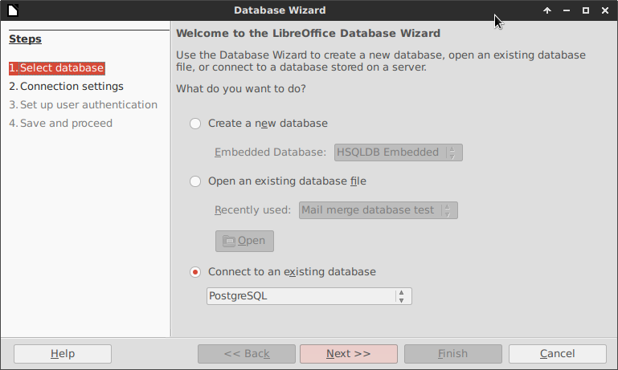
In the next screen, enter the connection string. It should look like postgresql://host:port/database_name. You do not provide a username or password in the connection string, you can also do this in the next step.
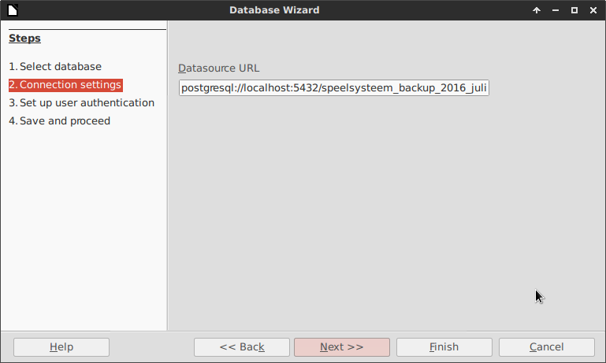
Now you can provide authentication details for the database. You can also test the connection here.
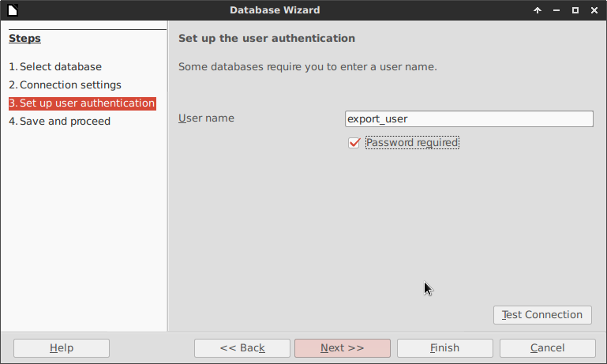
During the final step, you can save the database you created. Make sure to check Yes, register the database for me, this will register the database so you can access it from other LibreOffice applications. I also checked Open the database for editing, just to check if everything worked.
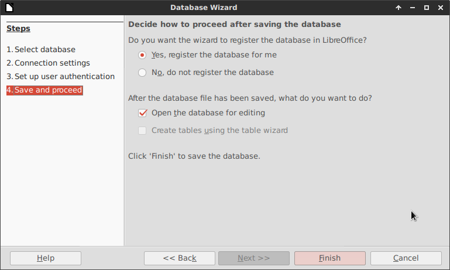
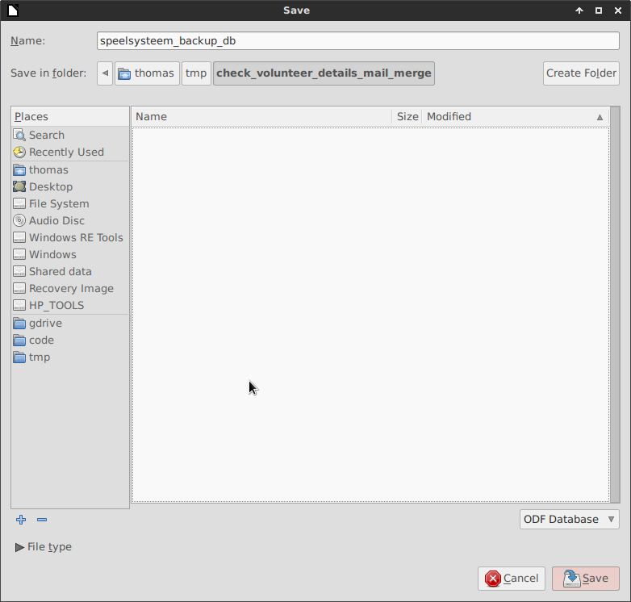
Creating a template
Now open up LibreOffice Writer. Go to View > Data Sources, or press F4 to open the Data Sources pane. Select your database and open the Tables view. You will find your tables all the way down, with a public. prefix (unless you used a different schema).
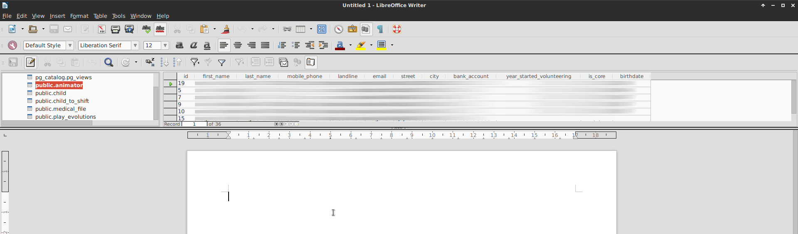
You can now create a template file. If you want to use a variable field, you can drag a column from the Data Sources view. For example, to get the first name, I dragged the first_name column into the document. Click on the column name (in the example first_name) and drag the caret into the text.
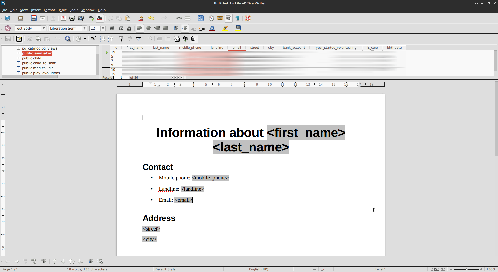
Creating the resulting documents
I have 36 rows in the table I want to use. I can now choose to export these to a single document (the result would be one document with 36 pages) or to individual documents (the result would be 36 individual documents). Since I will send the resulting documents to individual people, I will create individual documents.
You can export the document by opening the print dialog (File > Print... or Ctrl+P). When you do that, LibreOffice Writer will ask you Your document contains address database fields. Do you want to print a form letter?. Choose Yes.
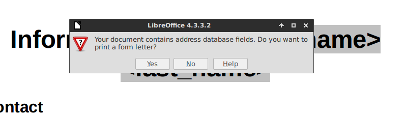
In the next dialog, you can select the records that should be used and control output settings. We will be outputting to a file and not printing, so select File for Output. I’m going for individual documents, the name of which is a custom column in a query I wrote. You could just as well use a database column.
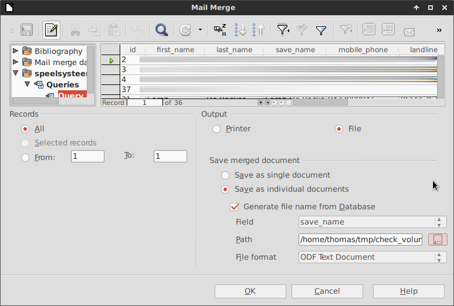
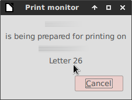
After exporting, you end up with individual documents. After experimenting, I choose to export to PDF. The files can now be sent to individual people to have them check their details.
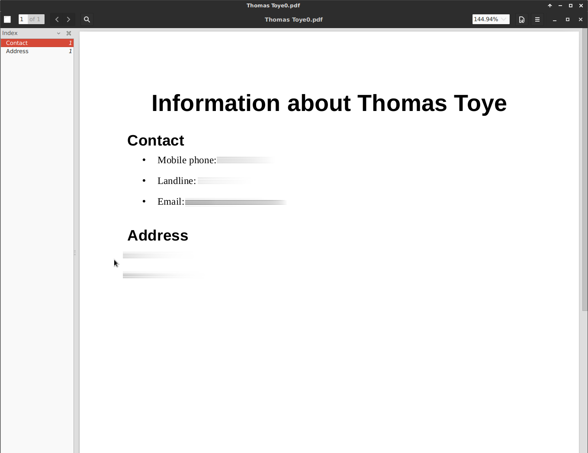